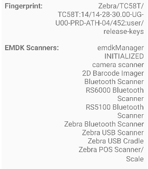
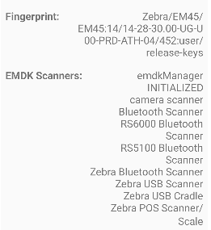

com.symbol.emdk.emdkservice on Android 14 (TC26)
Hello,
We are using the TC26 and TC27.
In our custom application, we utilize the EMDK and have adhered to the programming best practices outlined here: Zebra EMDK Programming Practices.
We want our application to run on both Zebra and Non-Zebra devices. So we do the check as described in the before mentiond Programming Practices.
However, after updating from Android 13 to Android 14, we've encountered an issue with the EMDK version check that employs the PackageManager. The following code snippet, recommended in the programming practices, no longer functions as expected, the EMDK service does not exist on the device:
try {
String emdkPkgName = "com.symbol.emdk.emdkservice";
PackageInfo pinfo = getPackageManager().getPackageInfo(emdkPkgName, 0);
String emdkVersion = pinfo.versionName;
} catch (PackageManager.NameNotFoundException e) {
// EMDK does not exists on the device.
}With:
<uses-permission android:name="com.symbol.emdk.permission.EMDK" />
<queries>
<package android:name="com.symbol.emdk.emdkservice" />
</queries>
Upon investigation, it appears that the emdkservice is no longer running on devices updated to Android 14. I've checked this with adb.
adb shell dumpsys activity services com.symbol.datawedge.emdkservice Which returned 0 results on the latest Android 14 Zebra release. (it does on Android 13).
Now the Programming Practices documentation we have used and linked above have been written for Android 13.0, but these have not been changed since Android 11.0. There is no updated documentation page for Android 14.0 yet.
Could you please confirm whether this programming practice is still valid for programmatically checking the EMDK version on devices running Android 14? If not, what alternative method would you recommend for retrieving the EMDK version in this environment? I know it can be checked with the EMDKManager, but we need to do the check before this is initialized.
I have noticed there is a EMDKService running on Android 14: com.symbol.datawedge/.EMDKService
Did the package name change?
Thank you for your assistance.
3 Replies
Hi,
At the moment, a valid way to check the EMDK version is
Hi Nicalo,
Thanks for your reply.
In our application, we’ve integrated built-in scanner functionality, but it also needs to run on a wide range of Android devices—not just Zebra devices. But also on Zebra devices that do not have a built-in scanner. We’re not particularly concerned about the specific EMDK version. What we do need to determine early on is:
Based on these checks, we enable or disable certain scanner-related UI components in the app. For instance, if no scanner is present, we may display a camera view as a fallback for barcode scanning.
We used to be able to do these checks very early, before attempting to instantiating any emdkManager classes—by checking for the presence of the
com.symbol.emdk.emdkservicepackage. Unfortunately it seems that this is no longer possible on the Zebra Android 14 build. But maybe there is another way to determine of the device has a built in Scanner installed?Hi G, thanks for the details you shared above.
Here is an example of what a TC58 would return

and this is a EM45 -note the 2D Barcode Imager missing

If you are interested in the source code, let me know your github username and i will let you in here https://github.com/NDZL/EMDK-EXERCISER-2024/blob/eaebd8c8bae0c46794aa0dfff241d43781debab7/EMDK.BARCODE/src/main/java/com/zebra/emdk_barcode/ZebraEMDKBarcode.java#L50
Hope this helps
Nicola dzl.